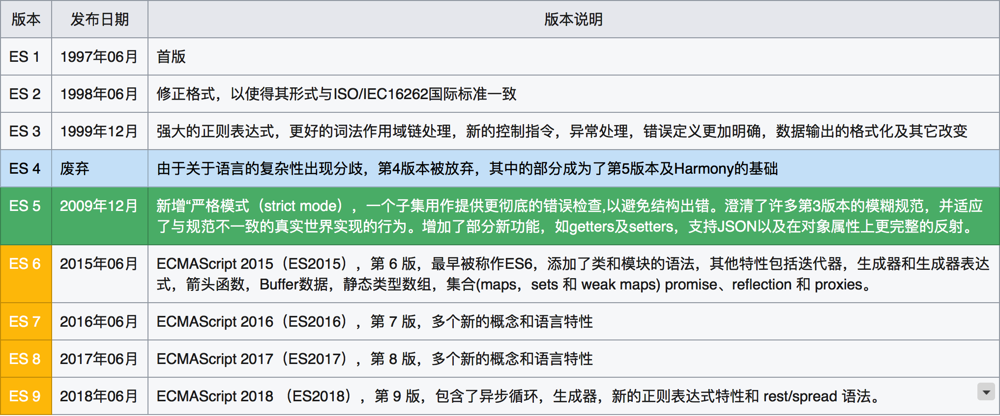
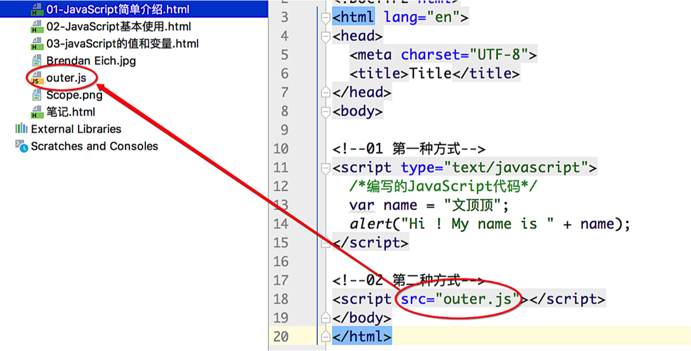
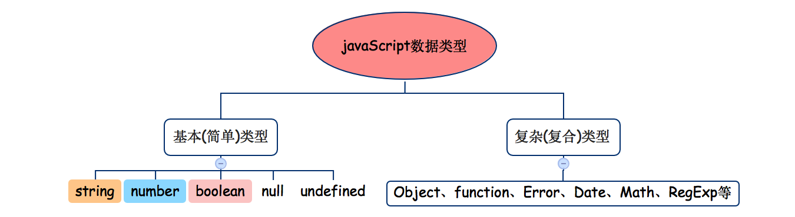

javaScript系列 [16]-语言基础
概述 JavaScript是一门动态、弱类型的解释型高级编程语言，它基于原型，支持面向对象和函数式编程等多种编程范式，通常简称为js。在世界上的绝大多数网站中都能看到JavaScript的身影，世界上所有的主流浏览器(Chrome、IE、Firefox、Safari、Opera)都支持它。
作者 Brendan Eich
背景 JavaScript诞生于1995年，其诞生的初衷是为了减轻服务器端的压力而在客户端提供一种表单验证的功能。最初命名为Mocha，1995年9月在Netscape Navigator 2.0的Beta版中改名为LiveScript，同年12月，Netscape Navigator 2.0 Beta 3中部署时被重命名为JavaScript，当时网景公司与昇阳电脑公司(Sun)组成的开发联盟为了让这门语言搭上Java这个编程语言“热词”，将其临时改名为JavaScript(其实就像现在某些网红蹭热度一样)。
标准 1996年11月，网景正式向ECMA（欧洲计算机制造商协会）提交语言标准。1997年6月，ECMA以JavaScript语言为基础制定了ECMAScript标准规范ECMA-262。JavaScript成为了ECMAScript最著名的实现之一。实现ECMAScript规范的语言还有Adobe的ActionScript和微软的JScript。
范围 虽然在大多数情况下，我们都认为ECMAScript和JavaScript表达的是相同的含义，但实际上JavaScript所表达的却比ECMAScript要广泛的多。完整的JavaScript应该由以下三部分组成：
❐ ECMAScript 由ECMA-262定义，提供核心语法功能。
❐ DOM 全称Document Object Model文档对象模型，提供访问和操作网页的API。
❐ BOM 全称Browser Object Model浏览器对象模型，提供与浏览器交互的方法和接口。

历史 ECMAScript迄今已经历多个版本的迭代，下面给出主要的版本历史。
关系 ECMAScript是标准(规范)，JavaScript是实现。H5是一种新的技术，JS用于实现H5新标签深层的扩展功能。HTML表示网页的核心内容和结构，CSS用于设置网页的样式，JavaScript控制网页的行为。
应用 JavaScript主要用于浏览器Web、物联网、游戏、桌面和移动应用开发和以及服务器端的开发。
参考 ECMA官网 ECMA-262规范PDF文件 布兰登·艾克博客
在html页面中使用JavaScript
在html页面中编写JavaScript代码需要借助script标签，具体的使用方式有两种。**① 在页面中嵌入JavaScript代码。在html页面中创建script标签，设置script标签的type属性为text/javascript，并在标签中直接编写JavaScript代码即可。② 在页面中引入外部的js文件**。在html页面中创建script标签，把javaScript代码单独保存在.js后缀的文件中，然后通过设置script标签的src属性来引入js文件。
script 标签的 type 属性可以省略，默认值即为text/javascript。
script 标签的 属性(节点)主要有：type(类型)、src(资源地址)、async(异步加载)、defer(延迟执行)、charset(字符集)等。
注释 JavaScript遵循C语言的注释风格，支持单行和多行注释。
1 | 单行注释 // |
语句
概念 在JavaScript中，可以简单认为一行完整的代码就是一条语句(statement)。分类 整体来讲，JavaScript的语句大致可以区分为声明赋值语句和控制语句两种。分号 JavaScript中使用分号(;)来间隔多条语句，若各语句独占一行那么大部分情况下可省略分号。
控制输出
JavaScript需要具体的JavaScript引擎(解析器)来解析，该引擎通常由浏览器提供，即JavaScript代码需要运行在浏览器中。JavaScript代码中常见的控制输出方式有以下三种：
❐ 输出到页面
document.write()
❐ 弹出框显示alert()
❐ 控制台输出console.log()
1 | /*01 弹出对话框提示*/ |
直接量
说明 直接量(literal)指的是程序中直接使用的数据值。
当一个值(数字、字符串等)直接出现在JavaScript程序中时，我们称之为直接量。
JavaScript语言中直接量(字面量)有很多，包括数字直接量、字符串直接量、数组直接量、对象直接量以及正则表达式直接量等等，下面简单给出一些直接量的示例。
1 | null; //空 |
变量基础
定义 变量是编程语言中能够存储计算结果或表示值的抽象概念。使用 在JavaScript语言中 变量需要先声明再使用。声明 使用 var 关键字来声明变量，如果省略var关键字那么该变量默认成为全局变量。作用 记录特定的内容，并通过变量名来访问它们。备注 JavaScript变量是无类型的(untype)，任何变量都可以被赋予任何类型的值。原理 当使用var关键字声明变量时，计算机会从内存中分配储存空间来存放不同类型的内容。
1 |
|
语法说明 var name_1 [ = value1][,...,name_n [ = value_n]]]
1 | /*声明示例*/ |
命名规范
标识符 标识符(identifier)指的是JavaScript代码中变量、函数、属性的名字，或者函数的参数。标识符(变量)在命名的时候并不能随心所欲，也有对应的规则和要求。下面列出具体的命名规范：
① 标识符可以使用下划线、字母、数字和$符号。
② 标识符不能以数字开头。
③ 标识符区分大小写(区别于HTML)。
④ 标识符不能使用JavaScript的关键字和保留字。
1 | /*01 常见(合法)的标识符命名方式*/ |
命名风格
JavaScript语言常用的标识符命名风格是驼峰标识法(camel-case)，即标识符的名称由多个单词组合的时候，每个单词的首字母大写以区分。驼峰标识又可以分成大驼峰标识和小驼峰标识，它们的区别在于整个标识符的首字母需要大写。
1 | 小驼峰标识 var wenDingDing = "神秘人"; |
当然，在写代码的时候给标识符命名并非一定要使用驼峰标识，这只是一种建议的风格，譬如有的开发者就喜欢用下划线来连接单词，类似于wen_ding_ding、stu_Name这样。类似的还有匈牙利命名法等，但在JavaScript编程中不建议使用。
JavaScript规定的关键字 关键字通常用于执行特定的操作。
JavaScript规定的保留字 保留字是给语言未来发展而预留的。
在编程语言中，能够表示并操作的值的类型被称为数据类型(
type)，能够支持多种数据类型是每一门编程语言的基本特征。在编写程序的时候，如果我们需要将某个(些)值保存起来以备将来使用时，就会将该 值赋值给一个变量(将值保存到变量中)。
JavaScript语言的数据类型可以简单的分成基本(简单)类型和复杂(复合)类型。

基本类型主要包括：字符串(string)、数值(number)、布尔值(boolean)、Null和undefined五种。其中Null类型有一个值，即null表示为空，而undefined类型也只有一个对应值undefined，表示变量未定义(即声明变量后未给变量赋值)。
复杂类型主要是对象类型，包括Object对象、Function函数、RegExp正则等，这里不做具体的展开。
typeof关键字
如果我们需要判断变量的类型，那么可以使用 typeof 关键字(操作符)。
语法 typeof 变量 | typeof(变量)结果 typeof 关键字执行后的结果总是为一个string类型的字符串。
1 | /*多种类型的变量*/ |
注意 对null执行typeof计算的结果为object,其实这被认为是JavaScript这门语言的一个设计错误。
字符串类型
定义 由〇个或多个16位Unicode字符组成的字符序列。表示 字符串可以由双引号或单引号表示。操作 可以通过length属性来获取字符串的长度，且多个字符串之间可以通过 + 来进行拼接。
1 | var str1 = "Hi ~"; |
注意 JavaScript中的字符串是不可变的，这也就意味着要改变某个变量保存的字符串，那么需要先销毁原来的字符串然后再用另外一个包含新值的字符串来填充该变量。
1 | var test = 'Hi ! '; |
布尔类型
说明 布尔类型用来表示正确和错误两种状态(同灯泡有开和关两种状态一样)。取值 布尔类型(boolean)只有两个值，分别是true和false。注意 布尔类型常用于条件表达式，布尔类型的值和字符串以及数值等可以相互转换。
undefined类型
undefined类型的值也只有一个，那就是undefined。我们在使用var来声明变量，但是没有对该变量进行初始化的时候，变量的值就为undefined，表示未定义。
Null类型
Null类型的值只有一个，那就是null(关键字)，通常表示空对象指针。
注意 ① typeof null 的结果为 object 而非 null。
注意 ② 实际上，undefined的值派生自null，因此ECMA-262规定它们的相等性测试需要返回true。
1 | /*01 布尔类型值*/ |
数值类型
定义 数值简单说就是数字，在JavaScript语言中数值类型包含整数和浮点数(小数)。小数 浮点数就是小数，数值中必须包含一个小数点，小数点后面必须至少有一位数字。备注 实际上JavaScript内部并不直接区分整数值和浮点数值，其所有数字均用浮点数值表示。
1 | /*01 数值的两种类型*/ |
进制 JavaScript中的数值类型支持多种进制，包括二进制、八进制、十进制和十六进制等。说明 在进行算术运算时，所有八进制、十六进制的数据最终都会转换为十进制的数据。特点 八进制的特点是数字以 0 开头，十六进制则以 0x 或 0X 开头。补充 实际上ECMAScript并不支持八进制直接量，且严格模式下八进制直接量被禁止，因此不建议用。十六进制值是 0 ~ 9之间的数字和a(A) ~ f(F)之间的字母 构成，字母对应的数字为10~15。此外，我们还可以通过调用toString方法传递参数的方式来实现进制的转换。
1 | /*进制的转换 通过toString方法*/ |
NaN 全称Not a Number(非数值)，NaN用于表示本来要返回数值的操作数而实际未返回的情况。
① 任何涉及NaN的操作都会返回NaN。
② NaN与任何值都不相等，包括NaN自身。
说明 上面列出了NaN的两个特点，针对NaN的这两个特点，ECMAScript提供了isNaN() 函数。isNaN()函数接收一个参数，该参数可以是任何类型的，该函数在执行的时候会尝试把参数转换为数值，如果参数不能被转换为数值(转换失败)，那么返回true，否则返回false。
1 | console.log(isNaN(NaN)); //true |
二进制浮点数的误差问题 JavaScript在使用数字(实数)的时候，常常只是真实值的一个近似表示。原因就在于JavaScript采用的是IEEE-754浮点数表示法(这是一种二进制浮点数表示法),这种表示法可以精确地表示分数，比如1/2、1/8和1/1024等，而我们开发中常用的反而都是十进制分数，比如1/10、1/100等，神奇的地方就在于这种表示法无法精确的表示类似于0.1 、0.2和0.3这种简单的数字。正是因为上面的原因，所以JavaScript语言中才会存在奇葩的 0.1 + 0.2 == 0.3 不成立的问题。
在JavaScript的基本数据类型中，字符串、数值以及其他类型之间是可以相互转换的，而这种转换大概又可以细分成两种，其一是在进行算术运算时默认会执行的**自动转换，其二就是强制转换**了。
类型间的强制转换
强制类型转换需要用到一些特定的函数，这些函数可以是Number()、Bumber()、String()也可以是parseInt()、parseFloat()、toString()等，下面将通过代码来演示它们的具体使用。
1 | /*01 Number(构造)函数把其它类型转换为数值*/ |
在上面的代码示例中Number函数用于将其他类型的数据转换成数字，而parseInt()和parseFloat()函数相对于Number()函数而言更加灵活。
parseInt()函数用于解析整数，如果字符串前缀是0x或0X，则将会被解析为十六进制数。解析规则为：跳过任意数量的前导空格，尽可能解析更多数值字符，并忽略数字后面的内容，如果第一个非空格字符是非法的数字直接量，将最终返回NaN。
1 | /*parseInt()基本使用*/ |
parseInt()被定义为declare function parseInt(s: string, radix?: number): number;该函数的第一个参数为字符串，它还可以接收第二个参数用于指定数字转换的进制基数，合法的取值范围是2~36。
1 | console.log(parseInt("111",2)); // 7 = 1 * 2 * 2 + 1 * 2 + 1 |
parseFloat()函数用于解析浮点数。解析规则为：跳过任意数量的前导空格，检索纯数字字符串后面第一个.后的不为数字的字符，并对之前所有的结果进行返回，如果第一个非空格字符是非法的数字直接量，将最终返回NaN，如果没有.则以整数解析的方式处理。
1 | /*parseFloat()基本使用*/ |